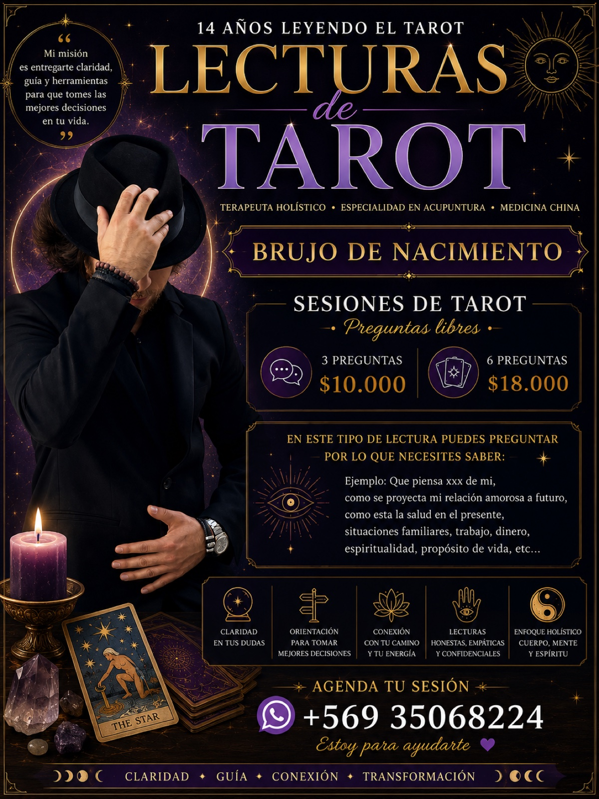
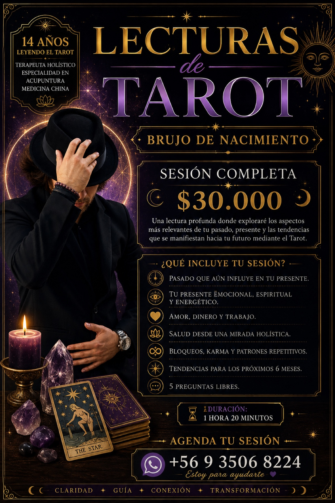
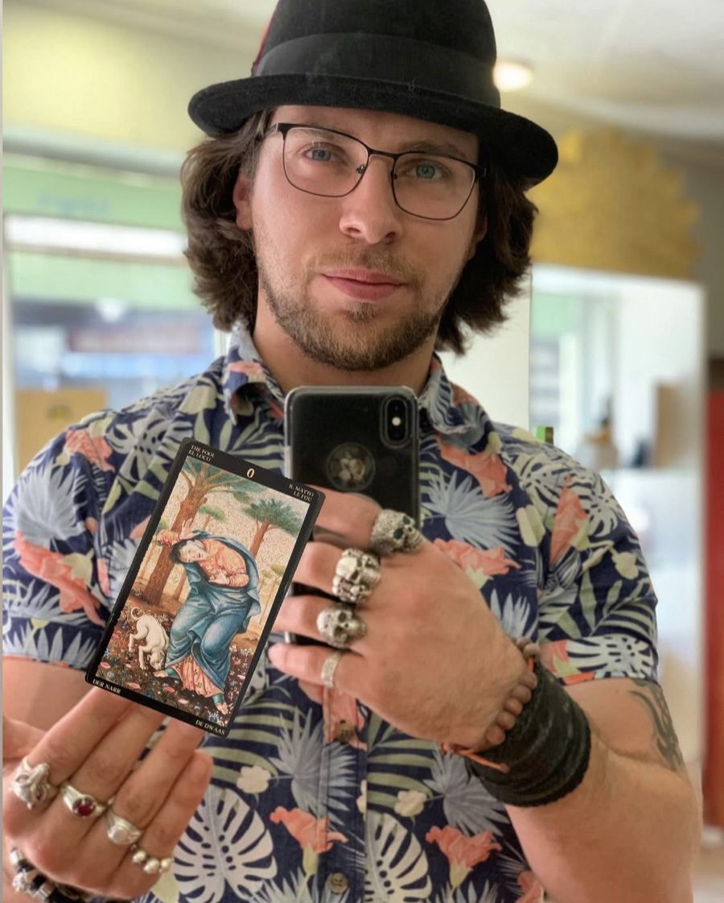
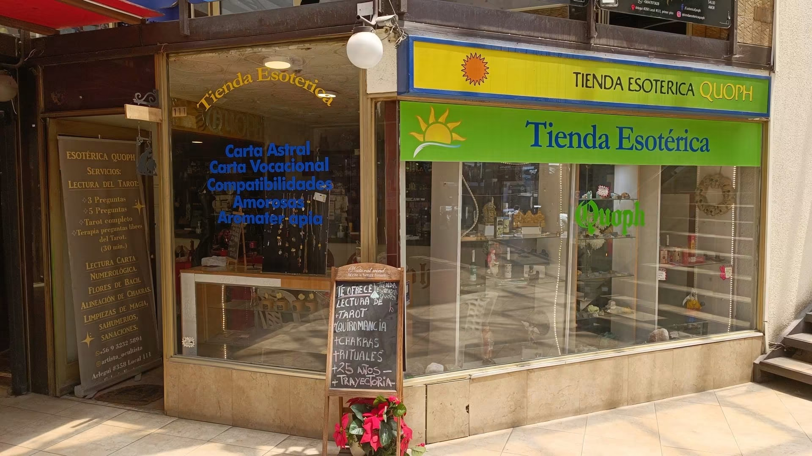
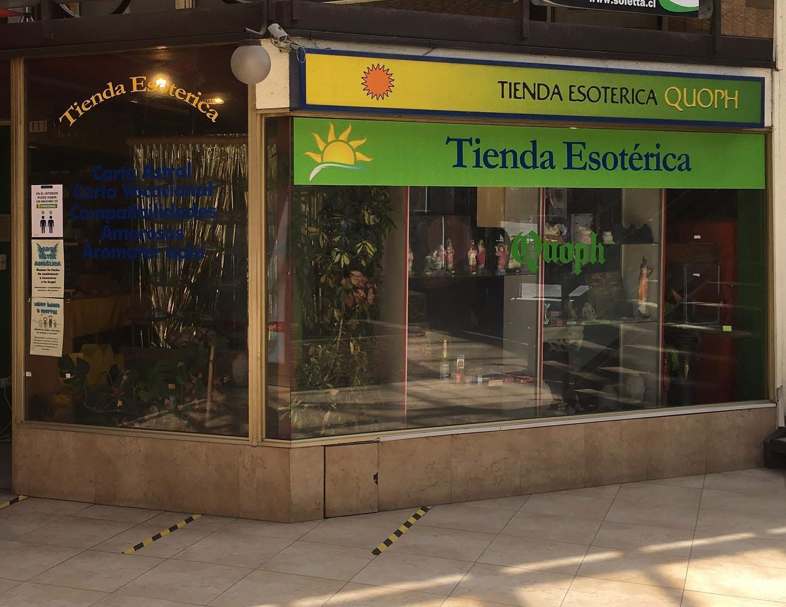
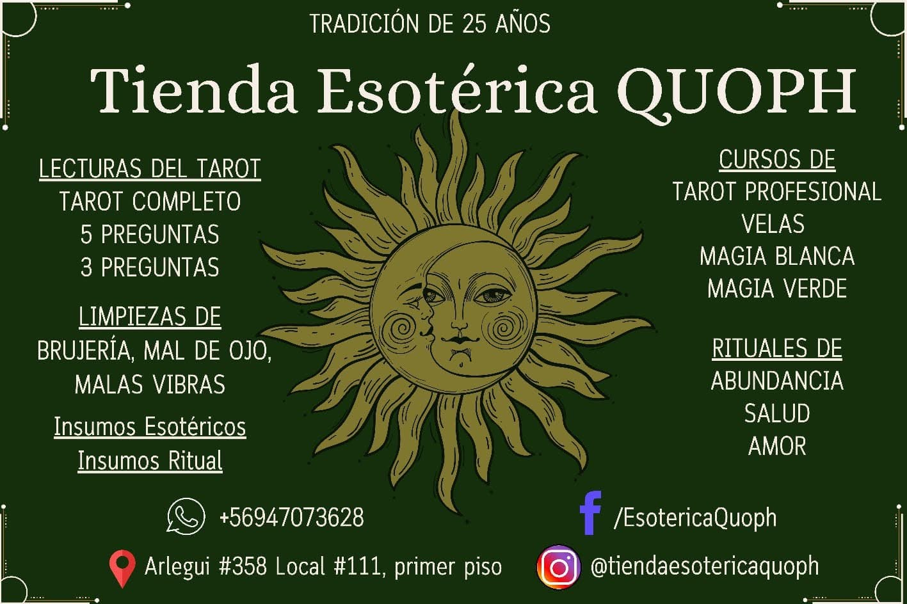

Katryn
Suma Sacerdotisa · Fundadora
Abrió Quoph hace 25 años en Viña del Mar y lleva más de cuatro décadas leyendo el Tarot. Suya es la forma de trabajar que la casa mantiene hasta hoy: lecturas honestas, oficio y respeto por la tradición.
Viña del Mar · 25 años de tradición
Tienda esotérica y lecturas de Tarot. Velas, inciensos, cuarzos, amuletos y figuras seleccionadas una a una — y sesiones honestas con Simón Pedro, tarotista con 14 años de experiencia y terapeuta acupunturista certificado por el MINSAL.
Catálogo
Veinticinco años eligiendo los mejores insumos esotéricos para tus prácticas espirituales. Arma tu pedido y lo confirmamos por WhatsApp — despacho a todo Chile o retiro en el local.
No encontramos productos con ese criterio.
¿Buscas algo que no ves aquí? Trabajamos con pedidos especiales: escríbenos por WhatsApp.
Servicios
Lecturas honestas, empáticas y confidenciales. Todas las sesiones pueden realizarse online (videollamada o audio) o presencialmente en el local.


Agenda
Completa el formulario y se abrirá WhatsApp con tu solicitud lista para enviar. Simón te confirma el horario y el medio de pago.
En este tipo de lectura puedes preguntar por lo que necesites saber: amor, trabajo, dinero, salud, situaciones familiares, propósito de vida.
Nuestra historia
Tienda Esotérica Quoph fue fundada hace 25 años y desde entonces hace lo mismo: acompañarte en tus procesos, entregarte guía y claridad con la ayuda del Tarot, y sostener tus prácticas espirituales con los mejores insumos esotéricos.
Una casa que ha visto nacer a muchos tarotistas.
Suma Sacerdotisa · Fundadora
Abrió Quoph hace 25 años en Viña del Mar y lleva más de cuatro décadas leyendo el Tarot. Suya es la forma de trabajar que la casa mantiene hasta hoy: lecturas honestas, oficio y respeto por la tradición.
Tarotista · Terapeuta acupunturista
Hijo de Katryn y quien sigue su legado. Brujo de nacimiento, suma a la lectura del Tarot su formación como terapeuta holístico especializado en acupuntura y medicina china, certificado por el MINSAL.

El tarotista
Brujo de nacimiento y continuador del legado de Quoph, la casa que fundó mi madre Katryn. Llevo 14 años leyendo el Tarot y trabajo como terapeuta holístico con especialidad en acupuntura y medicina china, certificado por el MINSAL.
Mi misión es entregarte claridad, guía y herramientas para que tomes las mejores decisiones en tu vida. No necesito saber nada de ti más que tenerte conectada o conectado conmigo: leo tu pasado que aún influye, tu presente emocional y energético, y las tendencias que se proyectan hacia tu futuro.
Visítanos
Veinticinco años en la misma vereda: Arlegui 358, Local 111 — primer piso, Viña del Mar. Lunes a viernes de 11:00 a 19:00 hrs. Aquí encuentras los insumos, las lecturas y los cursos de la casa.


